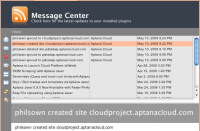
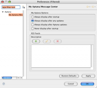
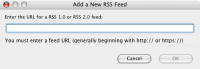

Contents |
What
  The Message Center
The Message Center
{kind=link}
The Message Center in Aptana Studio displays important messages regarding your Aptana Cloud sites as well as update news for installed plugins. You can add your own RSS feeds to monitor in the Message Center.
How
Preferences
 Message center preferences
{kind=link}
To access preferences for the notification window, first open it using one of the two ways described above. Once in the message center, click the preferences icon. This is the last icon on the left-hand side that looks like tiny gears.
{kind=link}
You can set when the message center notifies you of new messages, your choices are:
- Always display after startup
- Always display after any updates - this shows the message center when there are Aptana updates or updates to any of your subscribed RSS feeds.
- Always display after Aptana updates - this shows the message center only when there are Aptana updates.
- Never display after startup
Adding an RSS feed
 Add an RSS feed
{kind=link}
 Click the Plus icon to add a feed.
Click the Plus icon to add a feed.
A pop-up screen will appear. Enter the URL of the RSS 1.0 or 2.0 version feed you wish to monitor.
{kind=link}
{kind=link}
Access the Message Center
{kind=link}
The quickest way to access the Message Center is to click on the small "RSS" style icon in the lower right border of the Aptana Studio window.
{kind=link}
You can also access the Message Center from the Cloud Notification Preferences screen, by clicking the "Message Center" button in the top right-hand corner of the screen.
The same Message Center icon is available under Events & Notifications on the My Cloud - Overview screen.